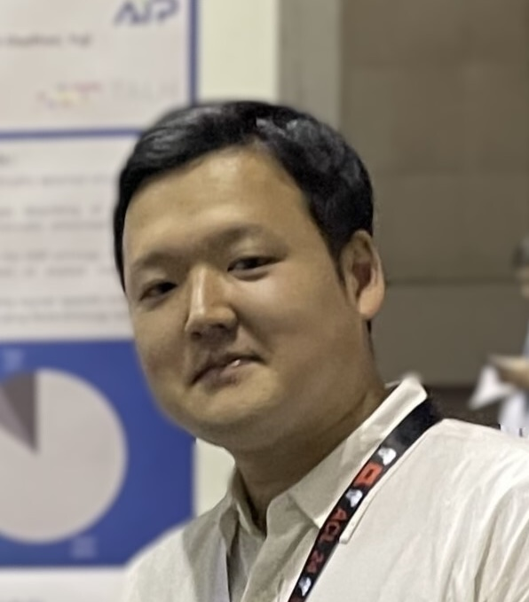

西田典起
博士（情報理工学）
理化学研究所 革新知能統合研究センター
研究員
〒103-0027 東京都中央区日本橋1-4-1
日本橋一丁目三井ビルディング15階
メール: noriki.nishida [at] riken.jp
理化学研究所革新知能統合研究センター (AIP) 研究員。
2020年東京大学大学院情報理工学系研究科博士課程修了。博士（情報理工学）。
自然言語処理、特に知識獲得と情報抽出、それらの専門分野 (医学・医療など) への応用技術の研究開発に従事しています。
大量の文書集合から有用な知識を自動で抽出し、整理・体系化し、知識の発見に役立てることに関心があります。
ニュース
- 2025年1月: 言語処理学会第31回年次大会にて主著3件、共著2件の研究発表を行います。
- 2024年12月: 論文 "Zero-Shot Entailment Learning for Ontology-Based Biomedical Annotation Without Explicit Mentions" (Munne et al.) がCOLING 2025に採録されました。
- 2024年7月: 論文 "Mention-Agnostic Information Extraction for Ontological Annotation of Biomedical Articles" (El Khettari and Nishida et al.) がBioNLP 2024に採録されました。
- 2024年4月: 論文「シソーラスの階層的構造を利用した弱教師あり固有表現抽出」 (芝原ら) が自然言語処理論文誌に採録されました。
- 2024年2月: 論文 "Recent Trends in Personalized Dialogue Generation: A Review of Datasets, Methodologies, and Evaluations" (Chen et al.) がLREC-COLING 2024に採択されました。
- 2023年6月: 理研AIPのミニワークショップ (GPT4 Journal Club Series) にて"Standard Supervision vs. In-Context Learning in NLP"という題で発表を行いました。
- 2023年6月: EmSemi2023 (First International Workshop on Embodied Semiotics) にて1件の研究発表を行います。
- 2023年3月: 言語処理学会第29回年次大会にて共著3件の研究発表を行いました。
研究分野
経歴
- 2023年12月 - 現在: 理化学研究所革新知能統合研究センター 研究員
- 2022年4月 - 現在: 筑波大学 非常勤講師
- 2020年7月 - 2021年6月: 東京大学 客員研究員
- 2020年4月 - 2023年11月: 理化学研究所革新知能統合研究センター 特別研究員
- 2018年4月 - 2020年3月: 日本学術振興会 特別研究員 (DC2)
- 2014年11月 - 2015年8月: 株式会社ロガリズム パートタイムソフトウェアエンジニア
学歴
- 2017年4月 - 2020年3月: 東京大学大学院 情報理工学系研究科 創造情報学専攻 博士課程
- 2015年4月 - 2017年3月: 東京大学大学院 情報理工学系研究科 創造情報学専攻 修士課程
- 2013年4月 - 2015年3月: 東京大学 工学部 電子情報工学科
- 2009年4月 - 2013年3月: 東京大学 教養学部 文科三類
- 2006年4月 - 2009年3月: 京都成章高等学校
教育歴
- 2022年10月 - 現在: 筑波大学 データサイエンス
- 2022年4月 - 現在: 筑波大学 情報リテラシー (演習)
- 2017年10月 - 2018年3月: 東京大学大学院 データサイエンス TA
- 2014年10月 - 2015年3月: 東京大学工学部 プログラミング基礎論 TA
受賞
- 2020年12月: EMNLP 2020 優秀査読者 (Outstanding Reviewers)
- 2020年3月: 言語処理学会第26回年次大会 若手奨励賞
- 2017年7月: 人工知能学会第31回全国大会 全国大会優秀賞
講演等
- 2023年6月: Standard Supervision vs. In-Context Learning in NLP @ GPT4 Journal Club Series (RIKEN AIP mini workshop)
- 2022年5月: 機械学習による科学論文からの知識獲得 @日本計量生物学会2022年度年会 特別セッション 機械学習への招待（２）
- 2018年11月: 教師なし談話構造解析 @産業技術総合研究所 人工知能研究センター
- 2016年3月: 画像認識における深層学習の動向 @日本音響学会 関西支部談話会
- 2015年9月: 映像認識における深層学習の動向 @Prometech Simulation Conference 2015
競争的資金等の研究課題
- 2022年6月 - 2023年3月: 科学技術振興機構 AIPチャレンジ 研究課題「医学・薬学論文からの知識獲得のための談話解析の応用」
- 2022年5月 - 2025年3月: 日本学術振興会 科研費 学術変革領域研究 (B) 研究課題「マルチモーダル対話翻訳における潜在的構造理解に基づくモダリティ横断」(分担)
- 2021年4月 - 2024年3月: 日本学術振興会 科研費 若手研究 研究課題「新たな医療知識の獲得に向けた医学系論文の文脈構造の解析と情報抽出への応用」
- 2018年4月 - 2020年3月: 日本学術振興会 科研費 特別研究員奨励費 (DC2) 研究課題「談話構造と知識に基づく自然言語理解のための深層学習モデルの提案」
学会活動等
- プログラム委員
- 言語処理学会 第31回年次大会 プログラム委員
- EMNLP 2023 Publicity Chairs
- SCIDOCA 2021,2022,2023,2024
- 論文誌編集委員
- 言語処理学会論文誌 自然言語処理 (2023年4月 - 現在)
- 論文誌査読
- Language Resources and Evaluation
- ACM Transactions of Asian and Low-Resource Language Information Processing (TALLIP)
- 言語処理学会論文誌 自然言語処理
- 国際会議査読、国内会議審査
- ACL Rolling Review
- ACL, NAACL, EACL
- EMNLP
- COLING
- AAAI
- IJCAI
- 言語処理学会年次大会
- MIRU